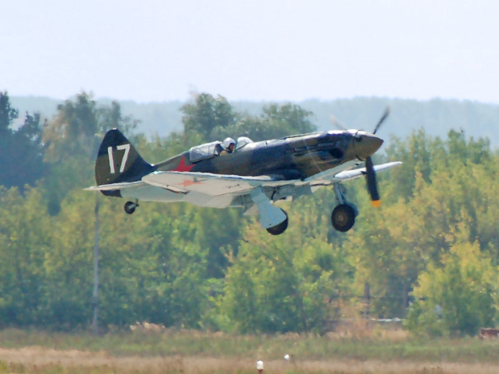

mig-3
A MiG–3 (oroszul: МиГ–3) szovjet vadászrepülőgép volt a második világháború alatt. A repülőgépet a MiG–1 vadászgépből fejlesztette az 1. számú repülőgépgyár tervezőirodája, hogy kiküszöböljék a MiG–1 fejlesztése és használata alatt észlelt problémákat. 1940. december 20-a után az 1. számú repülőgépgyárban a MiG–1 helyett már ezt a gépet szerelték össze, és 1941-ig nagy sorozatban gyártották. Ekkor a gyárat az Il–2 csatarepülőgépek gyártására állították át.
1941. június 22-én a Barbarossa hadművelet megindulásakor 981 gép volt szolgálatban a szovjet légierőnél, a szovjet légvédelemnél és a szovjet haditengerészeti légierőnél. A MiG–3-at békeidőben is nehéz volt repülni, de sokkal nehezebb volt harci bevetések alatt. A gépet eredetileg magassági bevetésekre tervezték, de a keleti fronton a harcok legtöbbször kis magasságban zajlottak, ahol nemcsak a német Bf 109, hanem a legtöbb egykori szovjet vadászgép is jobbnak bizonyult nála. Vadászbombázóként is erőltették bevetését 1941 őszén, de erre ugyanúgy nem volt alkalmas. Később a túlélő példányokat a légvédelemhez csoportosították, ahol a hátrányai kevésbé jelentkeztek, az utolsót még a háború befejezése előtt leszerelték.

A MiG–1 vadászgép próbarepülései alatt tapasztalt nagyszámú üzemzavar arra kényszerítette a tervezőket, hogy több változtatást eszközöljenek a konstrukción. Méréseket végeztek egy legyártott repülőgéppel a CAGI T–1 szélcsatornájában, hogy megállapítsák a hibákat és azok javasolt kiküszöbölését. Az első repülőgép, amelyen már az összes módosítást végrehajtották, az I-200 negyedik prototípusa volt. Ez a gép először 1940. október 29-én szállt fel, majd az állami vizsgák során sorozatgyártásra fogadták el. Az új gép, amelynek típusjele MiG–3 lett, december 20-án készült el és még az év vége előtt 20 példányt rendeltek belőle.[1]